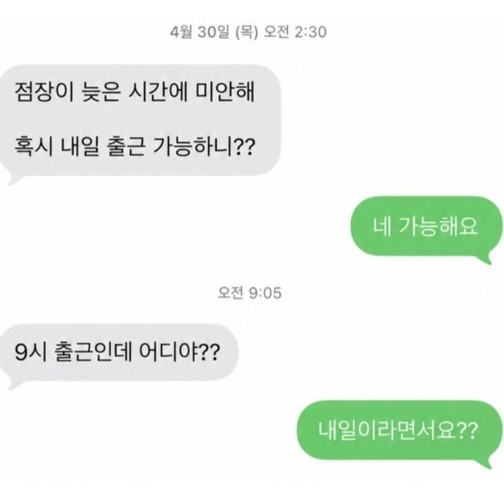

사장 잘못 vs 알바생 잘못
유저들 사이에서 의견이 서로 엇갈린다고..

사장 잘못 vs 알바생 잘못
유저들 사이에서 의견이 서로 엇갈린다고..
그럼오전 2:30분에 당일 오전 9시에 출근해달라고 연락했다는거임? 무조건 사장 잘못이지 이게 의견이 갈릴 수가 있냐
사장 잘못이지
점장이 병신 땅땅땅
사장이 개병신이지 7시간뒤에 출근하란놈이 미친놈이지
점장이 씹년맞음
아오
사장쉴드 어떻게치냐? 궁금한데?
외국에서 문자하셧나 왜저럼
사장이 병신이지 날짜가 바꼈는데 그럴거면 정확한 날짜를 알려줬어야지
이건 점장 잘못임
시발 저정도 시간간격이면 조금 이따
아침에 출근가능하니라고 물어야지
새벽이라 충분히 혼선있을수있음
100퍼 점장잘못이긴한데
나는 꼬일까봐 무조건 되묻긴할듯ㅋㅋ
사장은 상대에게 의사전달하는 방법부터 배워야 할 듯
부탁하는 쪽이 명확히 해야지
저건 어딜 가도 마찬가지임
1. 6시간 반 뒤에 출근해달라고 부탁함. 인력 관리 병신임.
2. 유치원때 배우는 건데 날짜 개념이 부족함.
3. 부탁하는 측이면 소통에 오해가 없게끔해야하는데 그런 기본적 소양도 없음.
의견 엇갈릴게 있나?
저거 몇번 당해봤는데 본인은 끝까지 뭐가 문제인지 인식 자체를 못하더라 ㅅㅂ
알바생의 으헤~
소통 오류는 나중 문제고
바로 몇시간 뒤 아침 출근 부탁을 새벽 두시 반에 하는 점장의 존재 <- 이미 쉽지않음